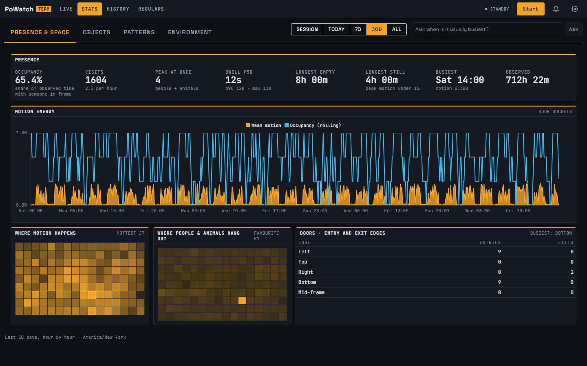
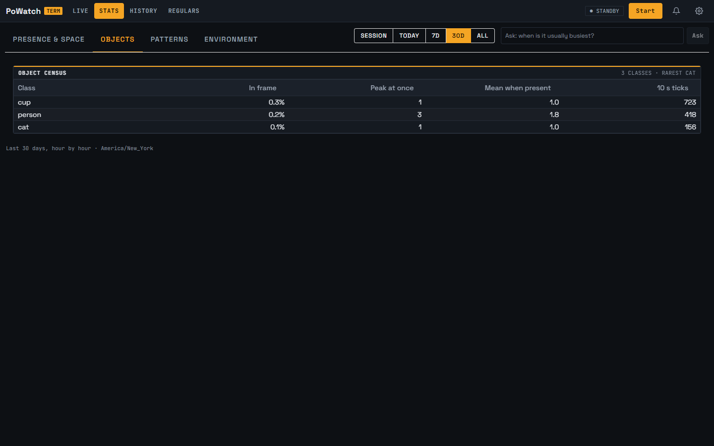
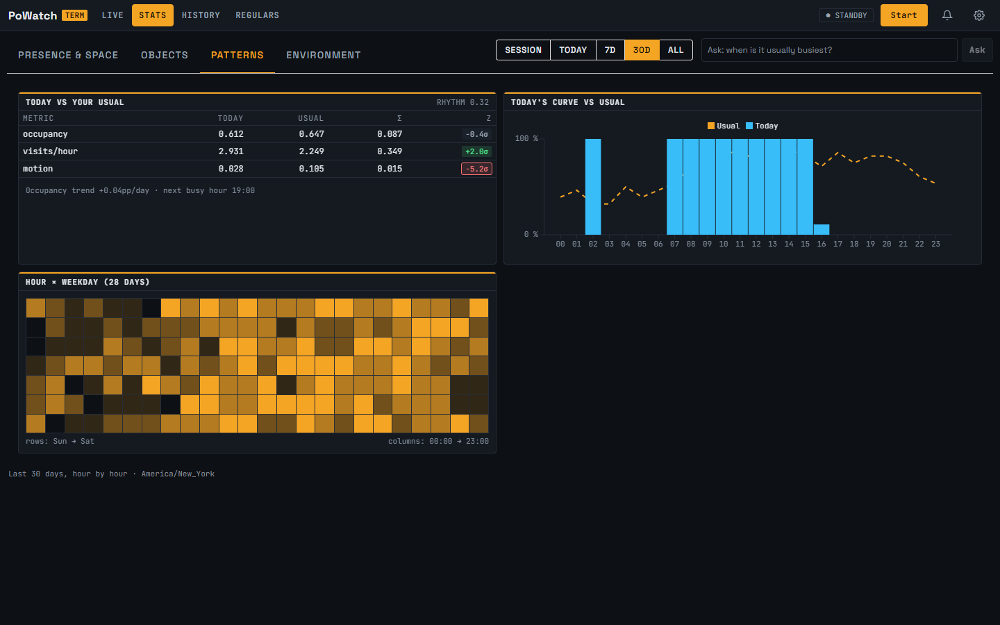
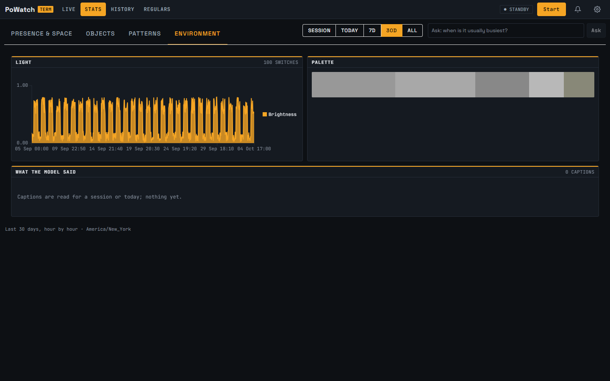
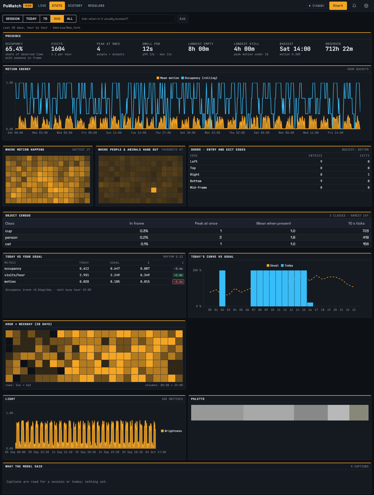

Captured 4 October 2026 from the running Development app (guest, seeded history, range 30D), 1440 wide.
Numbered markers on each screenshot match the notes under it.
what was therewhat changed
Before: four tabs
BEFORE · Presence & space tab

123
Four tabs. One stat family on screen at a time; the rest took a click each.
Range and Ask floated over the right of the tab strip.
Range label (and the Ask answer) sat under the tab content.
BEFORE · Objects tab

BEFORE · Patterns tab

BEFORE · Environment tab

After: one page
AFTER · one page

123456
No tabs. Range and Ask sit on a plain bar at the top and apply to everything below.
Range label and the Ask answer moved up under the bar, so an answer is visible without scrolling.
Presence and space: numbers, motion chart, both heatmaps, doors.
Object census, formerly its own tab.
Patterns: today vs usual, the hourly curve, hour × weekday.